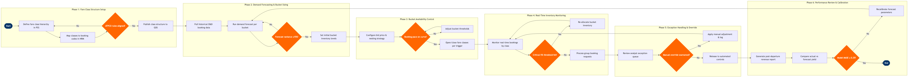

| Step | L4 Step Name | KPI / Target | Pain Point / Risk | Gate |
|---|---|---|---|---|
| 1.1 | Define fare class hierarchy in PSS | 100% of active fare products mapped to a booking class within 2 business days of product launch | Altéa booking class table has finite slots; adding new classes for ancillary bundles requires PSS configuration freeze that blocks concurrent distribution updates | |
| 1.2 | Map booking classes to RM fare buckets | Zero mismatches between Altéa booking class codes and NRM bucket definitions at go-live | NRM fare bucket schema uses internal numeric IDs that do not auto-sync with Altéa booking class labels; manual reconciliation required after each PSS config change | |
| 1.3 | Validate fare class structure against ATPCO rules | 0 ATPCO rule violations flagged by GDS edits at filing; audit pass rate 100% | ATPCO Cat 25 combinability rules interact with NRM bucket nesting in non-obvious ways; misalignment causes ghost inventory — classes show available in GDS but are blocked in NRM | ⚠ |
| 1.4 | Publish fare class availability to GDS channels | GDS availability refresh latency ≤ 90 seconds from NRM availability change; GDS parity rate ≥ 99.5% | Sabre GDS availability cache TTL (up to 90 s) creates window where high-demand bucket closures are not yet reflected, enabling over-sell of discount classes during flash sales | |
| 2.1 | Extract historical O&D booking data by fare class | Data extraction covering ≥ 95% of historical departures within planning window; query SLA ≤ 4 hours | Post-COVID booking patterns (2021–2022) distort historical curves; including them without seasonality dampening causes demand models to under-forecast leisure peak | |
| 2.2 | Run demand forecast model per O&D bucket | Forecast MASE (Mean Absolute Scaled Error) ≤ 0.25 for 90-day horizon; unconstrained demand estimate within ±12% of actuals at departure | NRM's detruncation algorithm underestimates unconstrained demand on routes with chronic sell-outs; results in systematic under-forecasting for high-yield buckets | ⚠ |
| 2.3 | Review forecast variance and approve bucket plan | Forecast review cycle ≤ 48 hours before system-generated availability updates are applied; < 5% of markets requiring manual correction | High analyst workload during peak schedule planning cycles forces rubber-stamping of model outputs; errors not caught until post-departure revenue review | ⚠ |
| 2.4 | Set initial bucket inventory levels for departure | Bucket initialisation completed ≥ 330 days before departure for all long-haul markets; ≥ 90 days for short-haul | SkyMAX fleet assignment changes propagate to NRM with up to 6-hour lag; bucket limits set against wrong aircraft type cause premature close-out of discount classes | |
| 3.1 | Configure EMSR-b bid price and nesting strategy | Bid price calibration complete ≥ 180 days before departure for long-haul; revenue uplift from nesting vs. partitioned control ≥ 2% RASM on calibrated markets | NRM's EMSR-b calculation does not natively account for ancillary revenue (bag fees, seat upgrades) in WTP estimates; bid prices structurally undervalue leisure segments | |
| 3.2 | Monitor booking pace against expected S-curve | BPI monitored at T−90, T−60, T−30, T−14, T−7, T−3 checkpoints; alert resolution SLA ≤ 4 hours | NRM booking pace alerts have a minimum 15-minute polling interval; during flash sales or news events, early-warning signals arrive too late to prevent discount class oversell | ⚠ |
| 3.3 | Adjust bucket thresholds based on pace deviation | Bucket adjustment applied within 2 hours of pace alert; average revenue recovery per adjustment ≥ $8/seat on affected flights | Frequent intraday bucket adjustments on the same flight trigger NRM re-optimisation queue delays; changes queue behind batch jobs and may not take effect for up to 30 minutes | |
| 3.4 | Open or close fare classes per booking curve triggers | Availability update propagated to all GDS endpoints within 90 seconds; close-out of discount classes ≥ T−3 on flights with load factor forecast ≥ 90% | NDC API Gateway availability sync with Altéa runs on a separate thread from GDS availability; NDC channel may display open discount inventory up to 3 minutes after GDS close-out | |
| 4.1 | Monitor real-time bookings and cancellations by class | Revenue recovery from cancellation-triggered re-opens ≥ $15/seat; dashboard refresh ≤ 5-minute lag vs. Altéa booking engine | High-volume cancellation events (weather, IROPS) flood NRM with availability change events; system enters degraded mode and availability updates queue, causing stale GDS displays | ⚠ |
| 4.2 | Process group booking requests against bucket availability | Group booking response time ≤ 24 hours; group revenue contribution ≥ 8% of total flight revenue on managed markets | Altéa group booking module holds seats as option status for up to 72 hours; large group holds on high-demand flights suppress availability for individual high-yield bookings, eroding RASM | ⚠ |
| 5.1 | Review exception queue for manual intervention flights | Exception queue reviewed twice daily (09:00 and 14:00 local); < 3% of managed flights in exception state at any time | NRM exception queue intermingles flights flagged by automated rules with analyst-generated annotations; high-priority items can be buried under system noise during IROPS events | ⚠ |
| 5.2 | Apply manual bucket override with audit justification | 100% of manual overrides documented in NRM audit trail; post-event review shows manual overrides outperform model recommendation in ≥ 60% of cases | NRM audit trail does not capture the external data (event calendars, competitor filings) that justified the override; institutional knowledge lost when analysts turn over | ⚠ |
| 6.1 | Generate post-departure revenue performance report | Report generated within 48 hours of departure; RASM variance between actual and pre-departure NRM estimate reported for 100% of flights | Altéa close-out files arrive in S3 in variable formats depending on PSS version; ETL pipeline requires manual intervention approximately 3% of the time due to schema drift | |
| 6.2 | Recalibrate NRM forecast model parameters | Quarterly recalibration reduces MASE by ≥ 0.02 vs. prior quarter; spill rate ≤ 3% and spoilage rate ≤ 5% on managed O&Ds post-calibration | NRM model recalibration requires a 72-hour training window during which live availability recommendations revert to static rules; scheduling this window without impacting peak sale periods is operationally difficult | ⚠ |